Attendance Management System
In landing page you found a menu Registration.Click here and give your information to create your company credential.Then it will auto login.
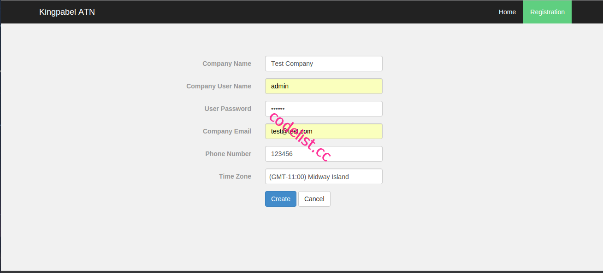
After login click on create user for creating your user id using username and password,for all of user.You can also add ip address for their,that without that ip address user can't login.It's for security purpose.You can also set In Time for user when you update them.If a user has In Time and he/she login after that in time his/her status will automatically set late.And you will get a alert message for that.
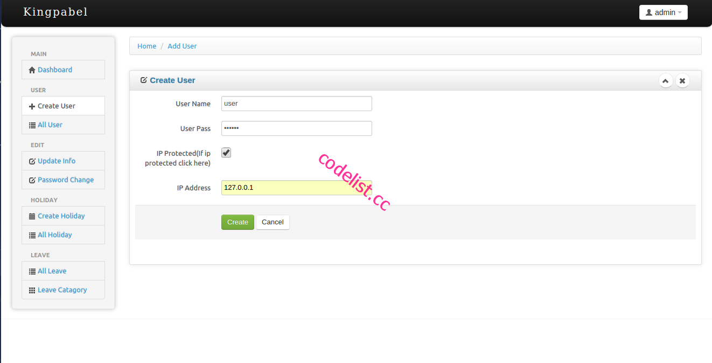
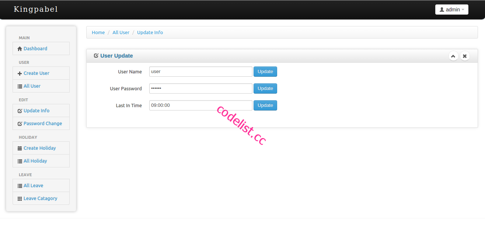
Admin can set last in time for an employee if an employee came after last in time he/she will get automitacally late for this day.
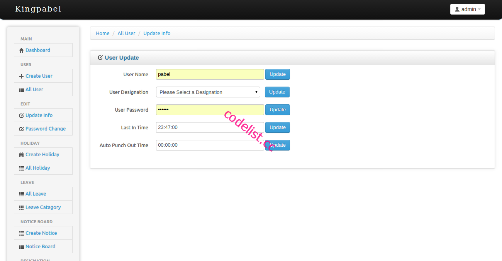
Admin can set auto punch out time,like for an user set auto punch out time in 5pm.If the user work more than 5pm he will automatically punch out on 5pm.
Admin can set punch In Out time for an individual employee.To get this first go to all user list then you will see a button "Force Punch In/Out" click this button and then will get option to set time.
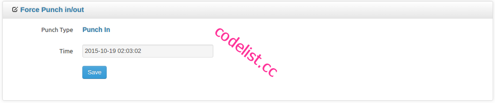
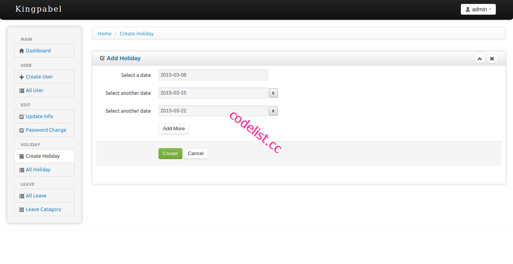
You can set holiday for your company after clicking Create Holiday menu.When you see attendance report it will shows that,that day was holiday.You can add and remove holiday
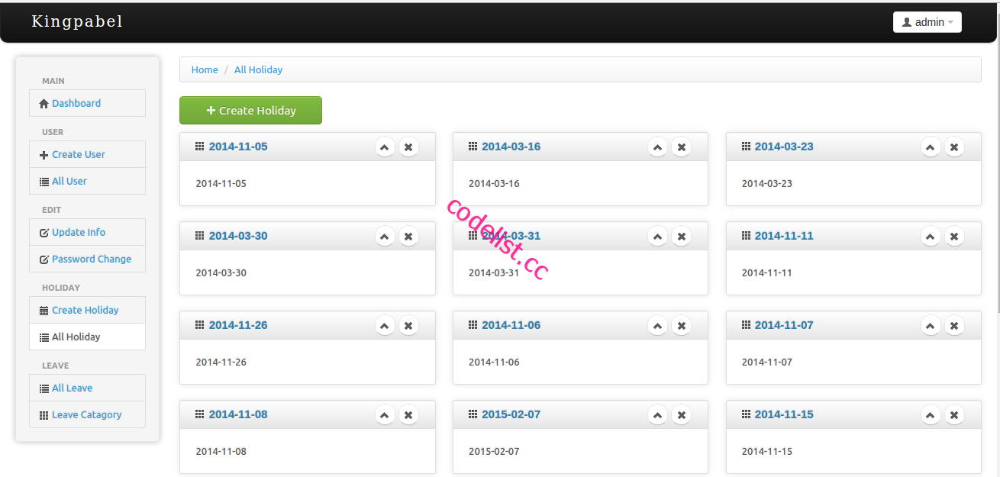
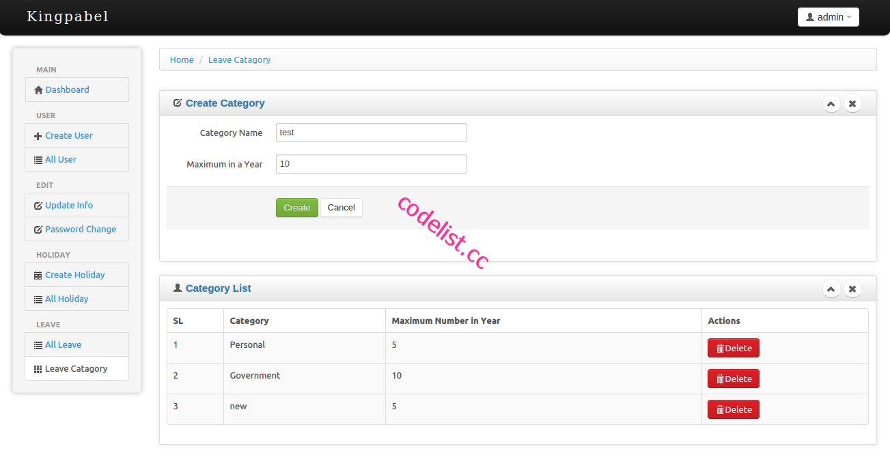
You need to create some leave creategory fo your employee to apply for their leave.You can create leave category after clicking Leave Category .Leave category can be defined that maximun leave in a year.Employee can't cross their leave budget.
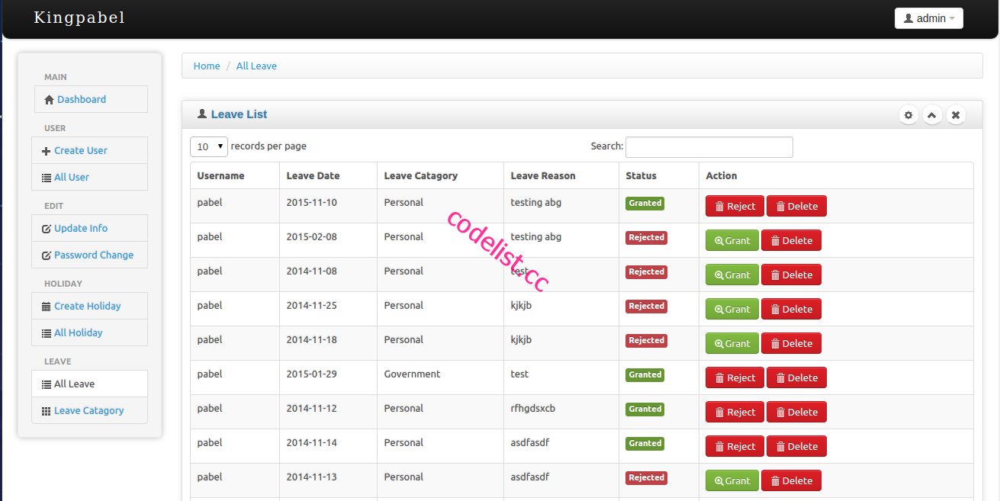
You can see all leave which are applied from employee.You can grant,reject and delete them.
Admin can create one or more designatoin from admin panel,which can be use for a user.
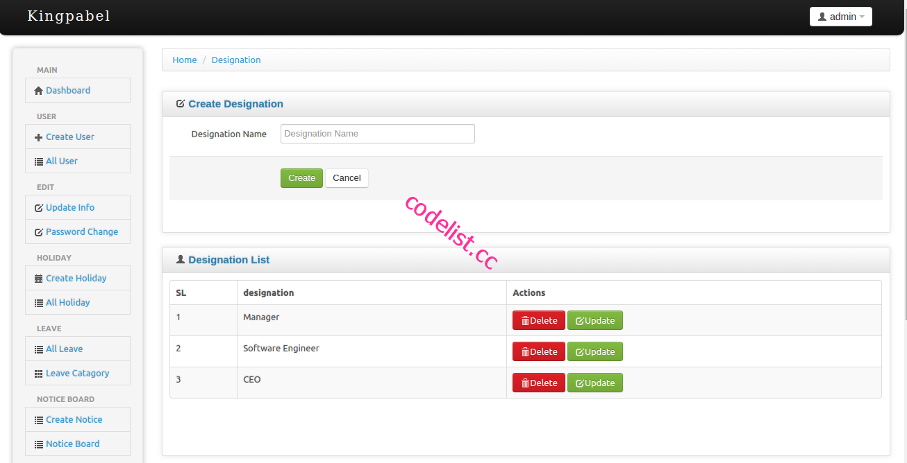
Designation can be set when click on user update button.
After set designation employee can see his designation in his account
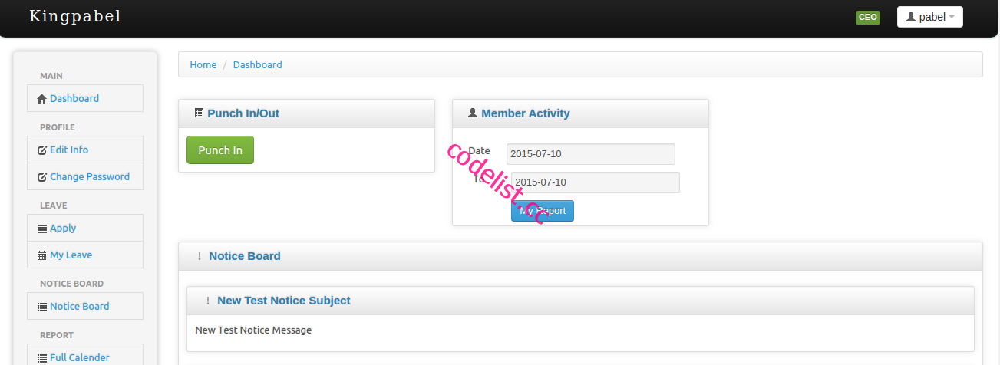
There is a new,most userfull feature for versoin 4.
In notice section you can set a notice from your company for all of your employee.To create a notice click on create notice button
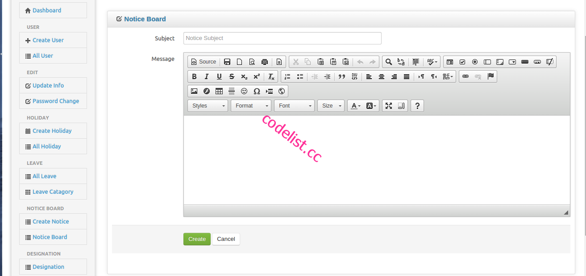
admin can create notice with most of feature of styling.
After create notice when admin click on notice board menu,admin got all notice list
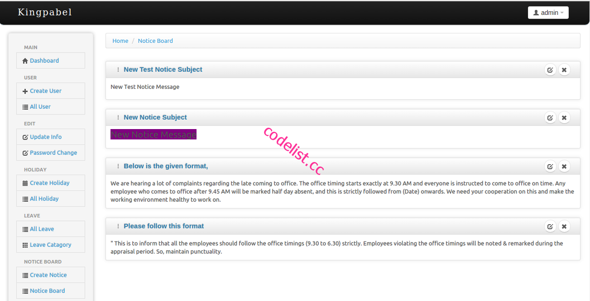
in both employeer and employee dashboard they will get most recent notice list
This is one of the most powerfull feature of this project.Employee can chat with admin and others colliq in chat option.Admin can chat all of the employee in chat option.
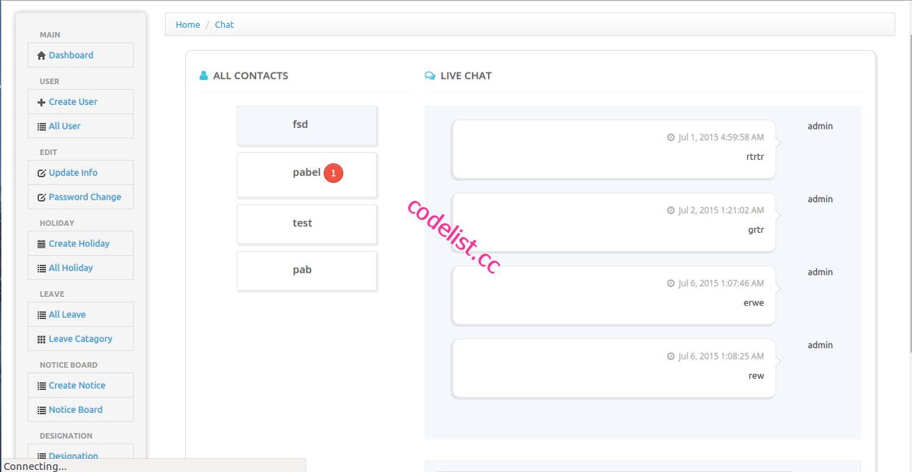
Admin can see all employee's summery report.After click All User you will found a date range.Using this date range you can see your all user summery report,that how many hours employee works.You can save this report as csv,excel,pdf,print .
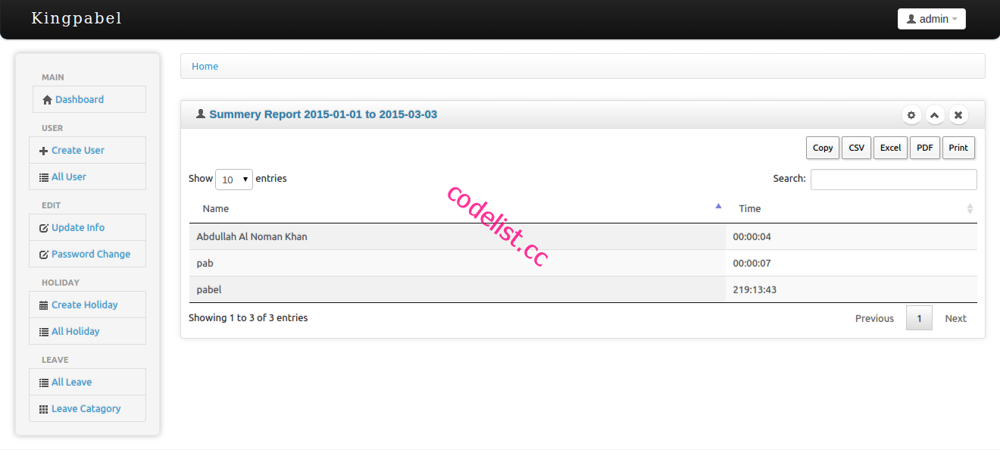
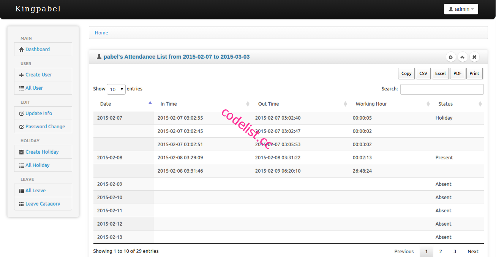
Admin can see all employee's individual report.After click All User you will found a date range.Using this date range and click on user individual report button that you will see your that user individual detail report.The most facility that you can save this report as csv,excel,pdf,print them.
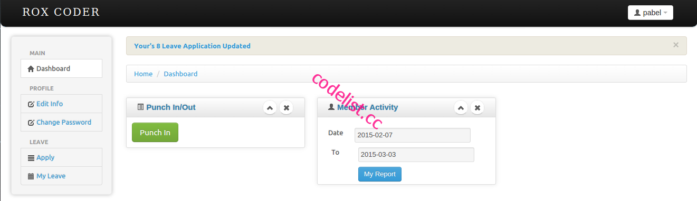
In employee dashboard when a emplyee click punch in his time tracking will start.And when he click punch out his tracking will stop.In member activity box there is date range.Using this date range employee can see his attendance time report.
Employee can edit his/her information and change his password.
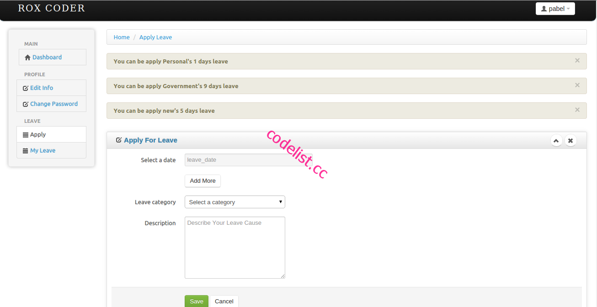
Employee can see his leave budget and can apply within this budget leave.
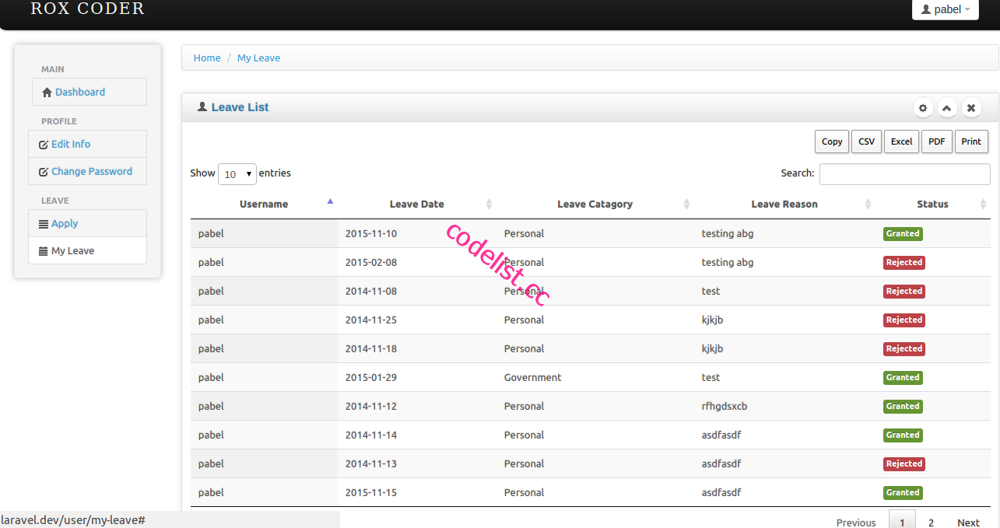
Employee can see his/her leave list with current status.Employee can save his leave report as csv,excel,pdf,print
This Update instruction's for who are already purchase this appliaction now want to update application.Execute those line in your existing database sql.If you are new to buy you dont need anything to do.Just import the sql file
"ALTER TABLE `users` ADD `auto_punch_out_time` TIME NOT NULL AFTER `id` ;"
CREATE TABLE IF NOT EXISTS `designation` (
`id` int(10) unsigned NOT NULL AUTO_INCREMENT,
`name` varchar(50) COLLATE utf8_unicode_ci NOT NULL,
`created_by` int(11) NOT NULL,
`updated_by` int(11) NOT NULL,
`deleted_at` timestamp NULL DEFAULT NULL,
`created_at` timestamp NOT NULL DEFAULT '0000-00-00 00:00:00',
`updated_at` timestamp NOT NULL DEFAULT '0000-00-00 00:00:00',
`company_id` int(11) NOT NULL,
PRIMARY KEY (`id`)
) ENGINE=InnoDB DEFAULT CHARSET=utf8 COLLATE=utf8_unicode_ci AUTO_INCREMENT=5 ;
CREATE TABLE IF NOT EXISTS `messages` (
`id` int(10) unsigned NOT NULL AUTO_INCREMENT,
`created_by` int(11) NOT NULL,
`updated_by` int(11) NOT NULL,
`deleted_at` timestamp NULL DEFAULT NULL,
`created_at` timestamp NOT NULL DEFAULT '0000-00-00 00:00:00',
`updated_at` timestamp NOT NULL DEFAULT '0000-00-00 00:00:00',
`sender_id` int(11) NOT NULL,
`receiver_id` int(11) NOT NULL,
`message` text COLLATE utf8_unicode_ci NOT NULL,
`read` tinyint(1) NOT NULL,
`company_id` int(11) NOT NULL,
PRIMARY KEY (`id`)
) ENGINE=InnoDB DEFAULT CHARSET=utf8 COLLATE=utf8_unicode_ci AUTO_INCREMENT=114 ;